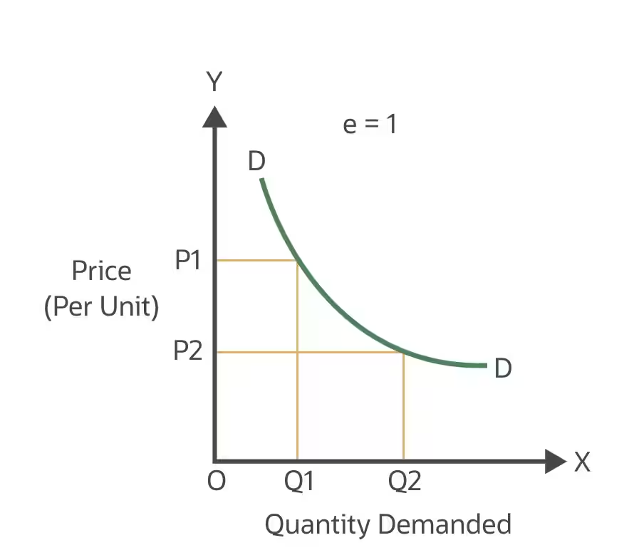

基础属性
每件物品都有一组可配置的属性：
- initial-price（初始价）：每件物品都必须有。你需要先估一个合理价；等市场形成自己的估值后，初始价的影响会越来越小。
- alias（别名）：玩家看到的物品名称。
- elasticity（弹性）：决定价格变化的难易程度和幅度。
提示：对于预计交易量不大的物品（高价值、稀有等），建议把弹性调高一些。

- noise-intensity（噪声强度）：价格受随机波动影响的程度。
注意：弹性会放大噪声。调高弹性，物品的价格波动同时也会更剧烈。
物品属性示例（items.yml）：
items:
# 物品标识符
cobblestone:
# 必填：
initial-price: 0.05
# 可选：
alias: 'Cobble'
# 可选：
elasticity: 0.5
# 可选：
noise-intensity: 1.4
# ...
关于噪声
噪声是「每分钟随机抖动一点点」的机制，用来模拟真实市场的杂音。玩家挂机时价格也会小幅变化，所以短时间线也会出现起伏；如果服务器希望价格更稳定，把 noise-intensity 调小甚至设成 0 即可。